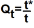

Rostschäden an Rohren bewerten
Die zulässige Gesamtfläche der Roststelle ist maximal 5 % der Oberfläche des Rohrs.
Rostschaden mit Fotos dokumentieren. |
Rost entfernen. |
Restwandstärke des Rohrs an betroffener Roststelle messen. |

Fig. 6164: Quotienten der Wandstärke berechnen
Fig. 6164: Quotienten der Wandstärke berechnen
Qt: Quotient der Wandstärke
t*: Restwandstärke des Rohrs an Roststelle
t: Nennwandstärke des Rohrs
Die Nennwandstärken des Rohrs sind im Anhang der Betriebsanleitung.
Quotienten der Wandstärke berechnen. |
Schadensbericht beim Liebherr-Kundendienst anfordern. |
Schadensbericht ausfüllen. |
Vorgang bei allen Roststellen wiederholen. |
Gesamtfläche der Roststellen am Rohr berechnen. |
Wenn Gesamtfläche der Roststellen größer als 5 % der Oberfläche des Rohrs ist: | |
Ausleger-Komponente für Verwendung sperren. | |
Liebherr-Kundendienst kontaktieren. |
Wenn Gesamtfläche der Roststellen kleiner als oder gleich 5 % der Oberfläche des Rohrs ist: | |
Maßnahme gemäß folgender Tabelle durchführen. | |
Berechneter Quotient der Wandstärke | Maßnahme |
|---|---|
Qt > 0,9 | Rostschaden beheben. Korrosionsschutz wiederherstellen. Schadensbericht archivieren. |
Qt ≤ 0,9 | Ausleger-Komponente für Verwendung sperren. Liebherr-Kundendienst kontaktieren. |
Rostschäden an Rohren bewerten